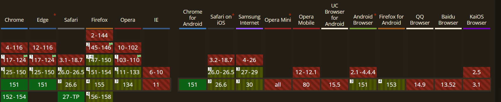

Explication
Attacher une infobulle (tooltip) ou un sous-menu à un bouton, et faire
en sorte qu'elle ne sorte pas de l'écran quand on scrolle, nécessitait
des usines à gaz en JS (comme Popper.js). Le navigateur calcule
maintenant la géométrie et les collisions tout seul grâce à
anchor() et position-try-fallbacks.
Démo Live
Faites défiler le petit bloc ci-dessous vers le bas. Au survol du bouton, le menu s'affiche en dessous. Si le bouton est trop près du bord inférieur, le menu bascule intelligemment au-dessus !
Code CSS
.anchor-btn {
anchor-name: --my-tooltip-anchor;
}
.anchor-tooltip {
position: absolute;
position-anchor: --my-tooltip-anchor;
top: anchor(bottom);
justify-self: anchor-center;
position-try-fallbacks: flip-block;
}Compatibilité et Fallback

Fallback : Sur les navigateurs non compatibles,
l'élément perdra son ancrage dynamique. La solution de repli consiste à
utiliser @supports not (anchor-name: --test) pour
positionner le tooltip de manière absolue traditionnelle (centré
grossièrement via des marges), ou bien charger dynamiquement une
librairie polyfill (comme Popper.js) uniquement si le support natif
échoue.